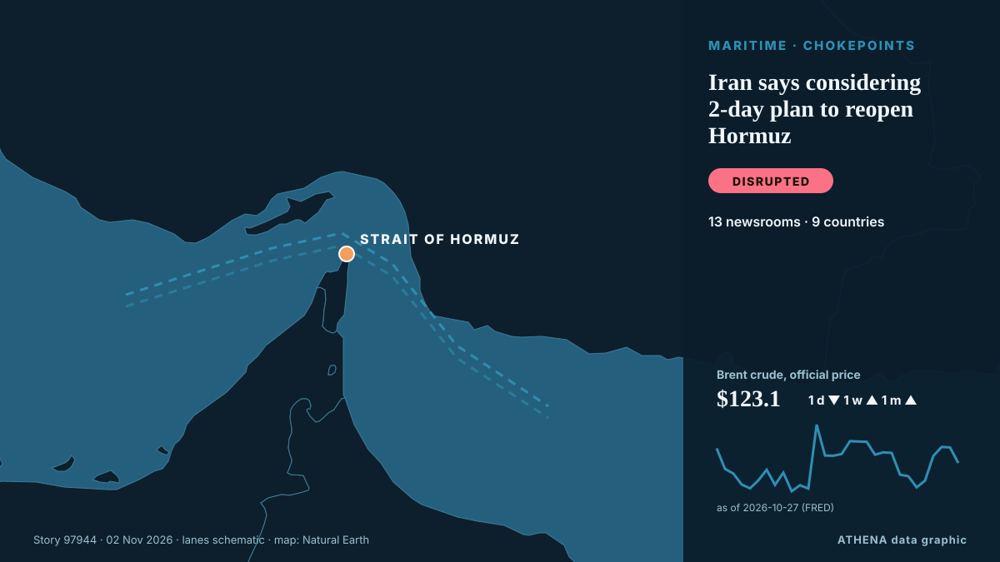

Handel, Industrie und Infrastruktur
GesponsertPräsentiert von  Cybernetics and Artificial Intelligence Lab Welcome to the Cybernetics and Artificial Intelligence Laboratory, established at the Department of Business Administration of the National
Cybernetics and Artificial Intelligence Lab Welcome to the Cybernetics and Artificial Intelligence Laboratory, established at the Department of Business Administration of the National
Schlagzeilen werden auf Englisch angezeigt, wie veröffentlicht.

Schifffahrt und HäfenIran says considering 2-day plan to reopen Hormuz
Tehran: Iran's foreign ministry on Monday said it was considering a two-day plan to reopen the Strait of Hormuz if the US agrees to its conditions, having previously proposed a one... von Oman Observer
| 20. Okt. | 28 |
|---|---|
| 21. Okt. | 40 |
| 22. Okt. | 96 |
| 23. Okt. | 73 |
| 24. Okt. | 41 |
| 25. Okt. | 57 |
| 26. Okt. | 116 |
| 27. Okt. | 103 |
| 28. Okt. | 93 |
| 29. Okt. | 94 |
| 30. Okt. | 95 |
| 31. Okt. | 33 |
| 1. Nov. | 47 |
| 2. Nov. | 36 |
Trump floats 'concept' of US-Canada deal that includes pipeline talking to Carney
MONTREAL/DUBUQUE, Iowa — US President Donald Trump said on Sunday that his administration has the “concept” of a… von BusinessWorld
Syrian arrested at Beirut Airport with 40kg suspected cocaine shipment from Ghana – NACOC confirms
The Narcotics Control Commission (NACOC) has confirmed the arrest of a Syrian national at the Rafic Hariri International Airport in Beirut, Lebanon, after he allegedly attempted to transport… von MyJoyOnline
Pirates hijack Iranian fishing vessel carrying 23 people
Pirates hijacked the Iranian fishing vessel Azini, carrying 23 people, in waters off Somalia's northeastern coast, the Associated Press reported, citing the Indian Ocean Maritime Security Center… von AzerNews
Armenia has effectively begun implementing TRIPP project, Pashinyan says
The Government of Armenia has effectively already begun implementing the “Trump Route for International Peace and Prosperity” (TRIPP) project, Prime Minister Nikol Pashinyan told lawmakers on Monday… von AzerNews
Hormuz shipping still faces major risks
The Strait of Hormuz remains dangerous and costly for shipping, despite US claims that it is open. von Al Jazeera English
Japan introduces new tax refund system for foreign tourists to curb illegal resales
A new consumption tax exemption system for foreign visitors to Japan took effect Nov. von Mainichi (English)
Second anniversary of Novi Sad railway station canopy collapse marked
The second anniversary of the railway station canopy collapse in Novi Sad, which resulted in 16 deaths and left one person severely injured, was comme. von N1 Serbia (English)
Malaysia Airlines says customers may be affected by Amadeus breach
The incident may have affected information processed between August 2023 and September 2026, the airline said on Sunday (Nov 1). von CNA (Channel NewsAsia)
Russians attack energy infrastructure in Kyiv and Zhytomyr oblasts
Russian attacks on energy facilities left over 650 Zhytomyr Oblast settlements without electricity and damaged infrastructure in six Kyiv Oblast districts. von Ukrainska Pravda (English)
SCA says Maersk's COO anticipates all services back through Suez by March 2027
The Suez Canal Authority says Rabab Boulos anticipates the whole Maersk network back in the canal by March 2027, and its count shows Maersk's transits nearly doubling year on year. von Container Magazine
Vessel Struck in Strait of Hormuz
Data and insights tracking transit activity, oil prices, petroleum reserves, supply chain impacts and geopolitical developments affecting the waterway. von IndustryWeek
Seoul to launch emergency response system for Czech nuclear project
SEOUL, Nov. 2 (Yonhap) -- South Korea will launch an emergency management system... von Yonhap (English)
Tanker struck by two projectiles near Saudi port in Persian Gulf - UKMTO
The location of the latest strike matters most for oil. von investingLive (ForexLive)
SFL Newbuild agreements and long-term charters of two 8,800 TEU container vessels and one very large ammonia carrier
SFL Corporation announced that it has agreed to acquire two 8,800 TEU Container Vessels with scheduled delivery in 2027 and. von Cyprus Shipping News
Tanger Med 3 terminal due to start operations in mid-2031
Tanger Med, Morocco (Ports Europe) November 2, 2026 – The Tanger Med 3 container terminal is due to start operations in mid-2031, Tanger Med chief executive Mehdi Tazi-Riffi said. von Ports Europe
$32M Vikings WR linked to former team 49ers in surprising NFL trade rumor
Minnesota Vikings wide receiver Jauan Jennings linked to San Francisco 49ers amid injuries and wide receiver depth concerns. von Times of India
Tanker struck by projectile in Strait of Hormuz
KUWAIT CITY, Oct 23: A tanker reported being struck by an unknown projectile while sailing outbound through the Strait of Hormuz, about seven nautical miles northeast of Limah, Oma... von Arab Times
Panama Canal Strengthens Long-Term Vision Following 41st Advisory Board Meeting
The Panama Canal Boards of Directors and Advisors concluded their 41st meeting today, following three days of discussions focused on evaluating opportunities for the waterway’s growth in a rapidly… von Panama Canal Authority
Over 21,000 people affected by adverse weather across Sri Lanka
Cyclone ‘Arnab’ affects over 21,000 people across 18 districts in Sri Lanka. von Ada Derana
South Korea exports nearly double in October, strongest growth since 1974
SEOUL: South Korea's exports nearly doubled in October from a year earlier, beating market expectations and marking the sharpest increase in more than 50 years, trade data showed on Sunday. von New Straits Times
Taiwan says China harassing shipping with east coast patrol
TAIPEI, Nov 1 (Reuters) – China’s Coast Guard is harassing shipping with its latest patrol off Taiwan’s east coast and trying to exert a fictional jurisdiction, the Taiwanese Coast Guard said, adding… von gCaptain
Serbians mark railway disaster that led to rise of victorious student movement
Protesters saw the collapse as symptomatic of corruption under former president Vucic. von The Straits Times
Iran submits evidence of US-Israeli attacks on ports, maritime infrastructure to IMO
London, IRNA — Iran has submitted documents and photographic evidence of US and Israeli attacks on the country’s ports, civilian vessels, and maritime infrastructure to the International Maritime… von IRNA (English)
Russian attacks leave over 350,000 without power in Dnipro and surrounding area
More than 350,000 consumers in Dnipro and surrounding settlements have been left without electricity following Russian attacks. von Ukrinform (English)
In Lebanese village near Israeli troops, farmers brave danger to harvest their olives
ZIBQIN, Lebanon Oct 29 - In a field overlooking a lush valley in southern Lebanon, residents of the village of Zibqin balanced on branches picking their olives while Lebanese Army soldiers stood… von The Straits Times
Russia extends diesel export ban until January
The Russian government extended on Saturday a temporary ban on diesel fuel exports until the end of January 2027, following a previous announcement by Russian Deputy Prime Minister Alexander Novak. von AzerNews
South Africa braces for AGOA review amid US trade talks
South Africa is preparing for possible changes to its eligibility under the African Growth and Opportunity Act (AGOA), while keeping trade negotiations with the United States ongoing, Foreign… von CGTN (World)
Ryanair responds to Kumar Sangakkara’s allegation
Ryanair has responded to Sri Lankan cricket legend Kumar Sangakkara, who accused the airline, following an incident involving the airline’s gate staff at Dublin Airport. von Daily Mirror
Natalia Margioli Breaks a 115-Year Barrier at Shipbrokers’ Institute
Natalia Margioli has become the first woman and first Greek to serve as president of the Institute of Chartered Shipbrokers in 115 years. von Greek City Times
Expect Gusts Up to 85 km/h and Rain in Costa Rica This Weekend
Gusts could reach 85 km/h in Costa Rica's mountains and northern Guanacaste today, with rain in the Caribbean and storms in the South Pacific. von The Tico Times
Tinubu arrives in Saudi Arabia for Umrah
Before leaving, President Tinubu is expected to inaugurate some equipment acquired by the Nigerian Air Force for its operations. von Channels TV
Iran Guards Say Halted 3 Tankers After 'Incidents' In Strait Of Hormuz
The Iran Guards did not specify the nature of the incidents, which came a day after Iran's armed forces said at least four tankers had stopped in the area after hitting mines. von NDTV
Letter from China: The one-person company, the port and the shopping bag, snapshots from Hainan FTP
The province’s services exports increased to around $6.02 billion in the reporting period. von TASS (English)
A tale of two Chinas
China’s economy is deeply unbalanced, with a battered real-estate sector, weak consumption, and stark regional disparities coexisting with dynamic tech and export sectors. von Project Syndicate